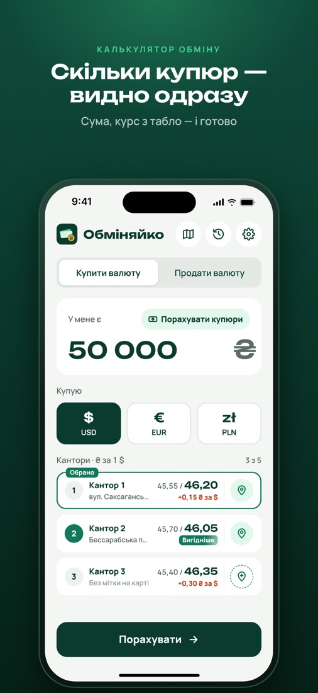
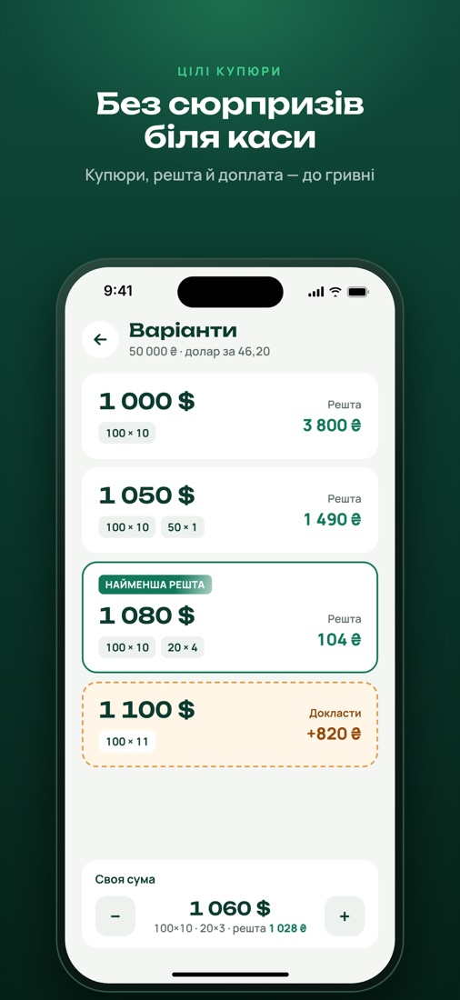
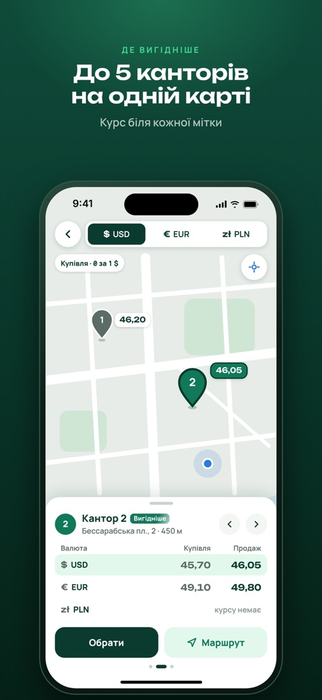
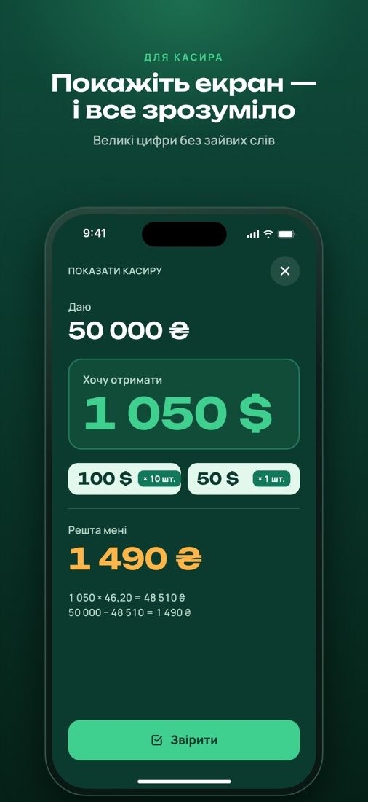
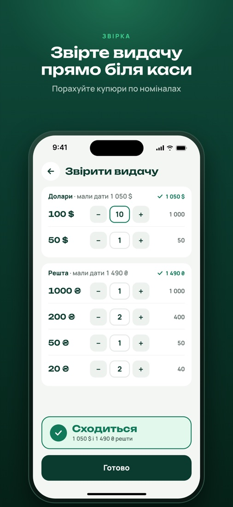
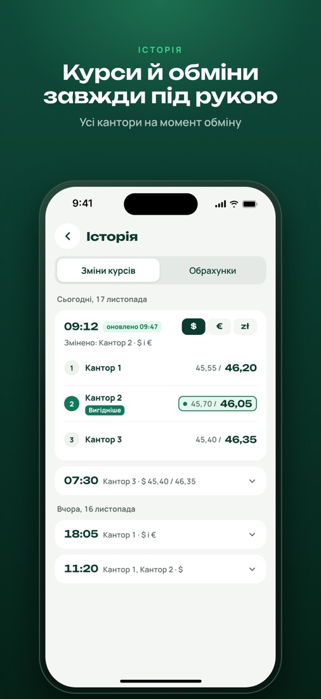

Цілі купюри, точна решта
Розклад по купюрах 100, 50 і 20 доларів, 100 і 50 євро, 200, 100 і 50 злотих. Найменша решта, варіант з доплатою або своя сума.
Обміняйко — калькулятор для обміну валют у канторі. Введіть, скільки у вас гривень, і курс з табло — застосунок одразу покаже, скільки цілих купюр валюти ви отримаєте і яку решту має віддати касир.

Розклад по купюрах 100, 50 і 20 доларів, 100 і 50 євро, 200, 100 і 50 злотих. Найменша решта, варіант з доплатою або своя сума.
До 5 канторів одночасно, курси в різних валютах. Найвигідніший позначено плашкою, біля інших видно переплату за кожен долар.
Усі кантори з курсом біля мітки, відстань і маршрут у «Картах» Apple.
Великий темний екран «Даю / Хочу отримати / Решта мені», який видно крізь скло каси.
Порахуйте видані купюри по номіналах — Обміняйко скаже, чи все сходиться, ще біля каси.
Зміни курсів і всі обрахунки зі знімком канторів на момент обміну.





Перемкніть режим — і дізнайтеся, скільки гривень отримаєте за свої долари, євро чи злоті. Якщо суму не скласти з купюр, Обміняйко запропонує найближчі.
Курс ви вводите самі з табло кантору. Інтернет потрібен лише для карти й адреси.